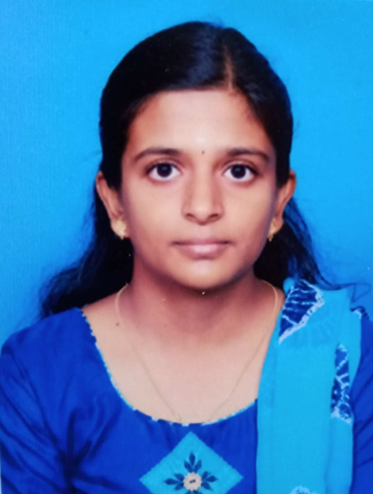

CONTACT
- Address:
Periyar nagar,Kinathukadavu,
Coimbatore
- Phone:
+91 9698785660
- Email:
keerthanaselvakumar31@gmail.com
- Linkedin:
https://www.linkedin.com/in/keerthana-s-a77441211
STRENGTHS
- Self motivated
- Decision making
- Flexibility
- Optimistic
TECHNICAL SKILLS
|
KEERTHANA S
CAREER OBJECTIVE
Highly passionate and creative individual looking for a challenging position
in an organization to enhance my skills with perseverance and dedication for the success of the organization
EDUCATION HISTORY
Sri Krishna College of Engineering and Technology, Coimbatore2019 - 2023
CGPA - 9.1
Vivek Vidyalaya Matric Higher Secondary School,CoimbatoreJune 2018 - April 2019
PERCENTAGE - 88%
Vivek Vidyalaya Matric Higher Secondary School,CoimbatoreJune 2016 - May 2017
PERCENTAGE - 99%
PROJECTS
Vehicle Testing using Machine Learning
- To detect the amount of smoke emitted by the vehicle and predict whether the vehicle is safe to run or not
Human Activity Recognition using Machine Learning
- To detect the brain signals and use those brain signals to monitor the mental health of students during online classes
|
|---|